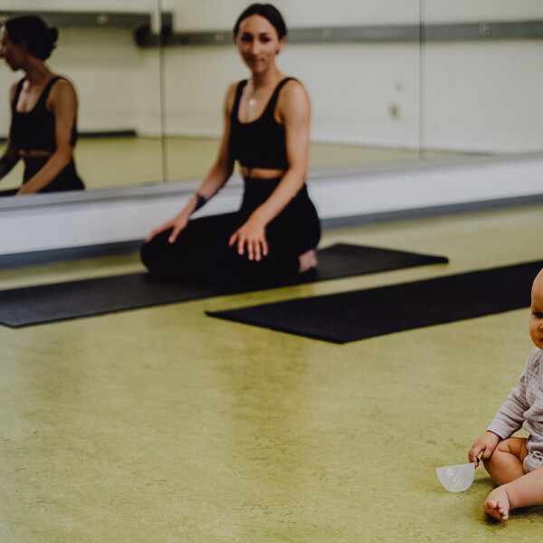
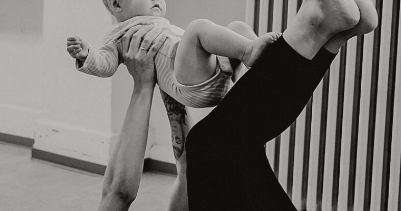
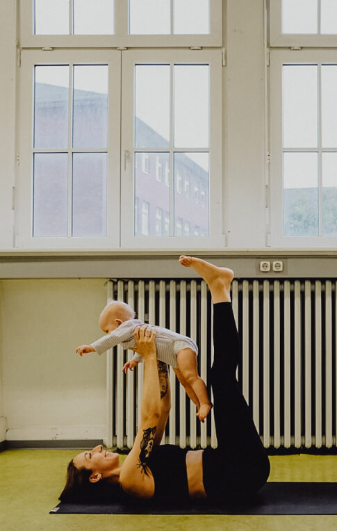

mama & baby
toddler

Krabbelgruppe oder Yoga?
Ganz klar – beides! Dieser Kurs bietet dir die Möglichkeit, deinen Körper zu stärken, und ermöglicht gleichzeitig deinem Baby den Kontakt zu anderen Gleichaltrigen. Mitmachen kannst du als Anfängerin oder fortgeschrittene Yogini.
Dein Baby krabbelt bereits durch die Gegend oder läuft sogar schon? Du hast Lust auf achtsame, körperliche Aktivität? Dann ist der Kurs genau der richtige für euch!

Gemeinsame Routine für mehr Ausgleich
Während dein Baby sich mit krabbeln, hochziehen oder anderen Babys beschäftigt, kannst du etwas für dich tun. Die Yoga-Haltungen (Asanas) dehnen und kräftigen den Körper, der oft im Alltag mit Kind einseitigen Haltungen und Fehlbelastungen ausgesetzt ist. Unser Rücken ist durch das Heben, Tragen & Absetzen der Kinder einer besonders fordernden Zeit ausgesetzt. Daher legen wir in dieser Stunde einen besonderen Fokus auf die Mobilisation der Wirbelsäule und Stärkung der Bauchmuskeln – so können sie unsere Rückenmuskeln bei hohem Kraftaufwand unterstützen und die Bandscheiben schonen.
Die regelmäßige körperliche Bewegung stärkt dein Selbstvertrauen und Wohlbefinden. Die Zufriedenheit die du hier gewinnst wirst du ausstrahlen und auf dein Baby übertragen.
Da der Fokus in der Yogastunde auf dir als Mama liegt, sollen sich die Babys frei bewegen, wenn sie möchten. Ziel ist es, dass jede von euch mal die Augen schließen und durchatmen kann. Wenn es für dein Baby mal zu viel wird, nimm es hoch, oder gib einfach Bescheid.

Alles kann,
nichts muss
Als Mama weißt du wahrscheinlich, dass kein Tag wie der andere ist. Mal sind die Kleinen ganz zufrieden mit sich oder anderen beschäftigt, und mal wollen sie kaum vom Arm gelassen werden. Wenn du dich hier nicht unter Druck setzt, bestimmte Ziele in der Yogastunde zu erreichen, hast du eine gute Basis für eine harmonische Zeit, die so individuell sein darf, wir du und dein Baby.


Für die Spontanen
Drop-In
14 €
Um im Flow zu bleiben
10er Karte
12 €
Weil du es verdienst
Ermäßigt
10 €
So viele gute Gründe
- Du brauchst keine Betreuung für dein Baby um etwas für dich zu tun
- Die regelmäßige gemeinsame Aktivität stärkt die Bindung zu deinem Baby.
- Die Asanas helfen dir im Alltag mit Baby Haltungsschäden vorzubeugen.
- Auf geistiger Ebene lernst du, auch in der Präsenzrolle durchzuatmen und aufzutanken.
- Der Kurs bietet dir einen geschützten Raum, um mit anderen Mamas in Austausch zu treten.
Klingt gut?
buchen
Die häufigsten Fragen zum Postnatal Kurs
Wie alt muss mein Baby sein, damit wir am Kurs teilnehmen können?
Das Alter spielt keine Große Rolle. Wichtig ist, dass dein Baby bereits mobil ist, also schon krabbelt oder sogar läuft, damit es sich mit den anderen Kindern beschäftigen kann, wenn es möchte.
Dein Baby ist noch zu klein? Schau' mal beim Postnatal Kurs vorbei.
Was ist, wenn ich mich verspäte?
Verspätungen sind bei den Kursen mit Kindern völlig normal – lass dich nciht stressen. Namasté
Ich habe besondere körperliche Beschwerden – darf ich trotzdem Yoga praktizieren?
In diesem Fall solltest du dir das Okay von deiner Ärztin oder deinem Arzt einholen, bevor du an einem Yoga-Kurs teilnimmst.
Ich weiß nicht, ob ich die ganze Stunde durchhalte.
Im Mama & Baby Kurs ist alles erlaubt – wenn dein Körper müde wird, mach die Augen zu. Nimm für dich und dein Baby auch gerne immer einen Snack mit – so könnt ihr euch während der Stunde zwischendurch stärken. Wenn euch doch mal nicht nach Yoga sein sollte, geht ihr einfach wieder nach Hause :-)
Was ist wenn mein Kind zwischendurch Hunger bekommt?
Stillen oder die Flasche geben ist hier nicht nur erlaubt, sondern erwünscht. Auch ein Snack darf gern mitgebracht werden. Fühlt euch einfach wie Zuhause.
Mein Baby ist sehr aufgeweckt – ist das nicht unangenehm für die anderen Teilnehmerinnen?
Jedes Baby ist hier willkommen – gerade wenn es mal anstrengend ist, tut ein Tapetenwechsel für beide oft gut.
Darf ich auch als Papa am Kurs teilnehmen?
Der Kurs ist leider nur für Frauen. Der geschützte Raum für die Mamas zum Stillen, Wickeln und Entspannen ist sehr wichtig. Falls du trotzdem Lust auf Yoga hast, schau mal beim Vinyasa Kurs vorbei.
Wo finden die Yogastunden statt?
Die Yogastunden finden in der Villa Rü im Raum 205 statt, direkt gegenüber vom Girardethaus. Da wir uns mitten in Rüttenscheid befinden, Plane genug Zeit zum parken ein, falls du mit dem Auto kommst.
Adresse
Girardetstraße 21,
45131 Essen
Raum 205
Direkt zu Google Maps
Allgemeine Infos zu meinen Kursen bekommst du hier.